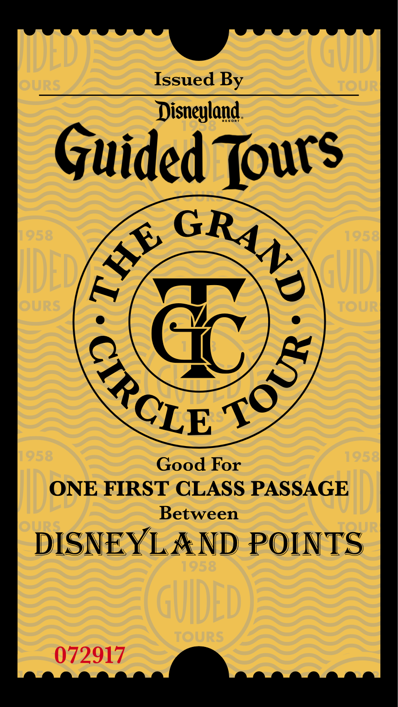
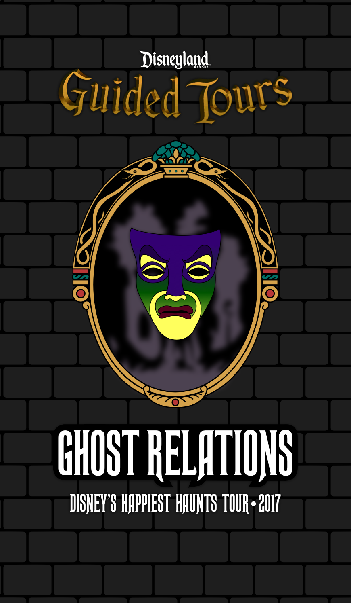
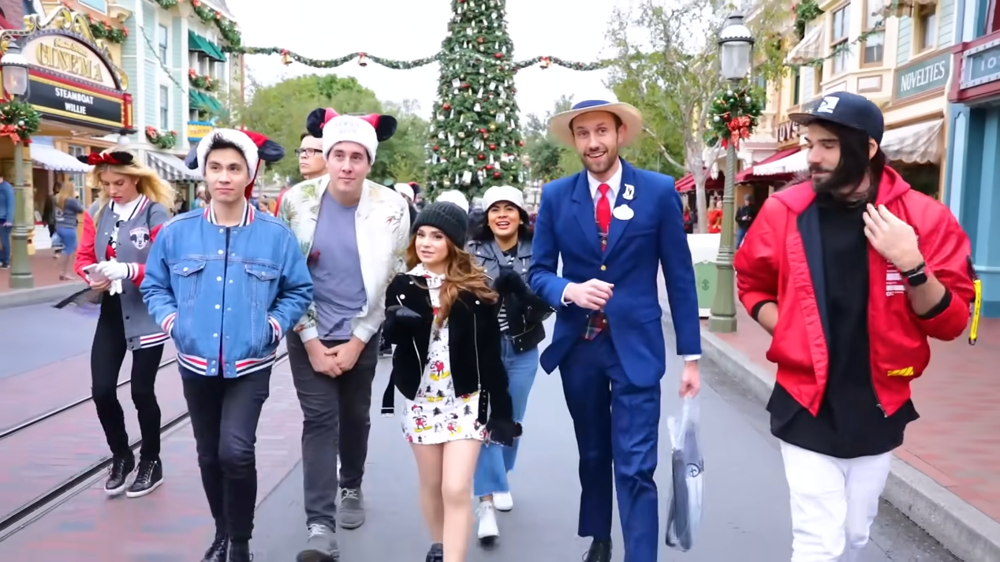

jackxalan/blog/
MY DISNEY CAREER
Jack Cummings • 04.29.24
My "career" began with three sessions of the Disney College Program, beginning in 2013 as a frontline Attractions Cast Member in Disney California Adventure at Mater's Junkyard Jamboree. That fall, I moved to Florida for my second College Program as an Attractions CM at Dumbo the Flying Elephant and The Barnstormer Featuring the Great Goofini. In 2014, I moved back to California as an Attractions CM at Golden Zephyr, Jumpin' Jellyfish, and Goofy's Sky School.
(It remains a point of pride that, to my knowledge, I am the only person to operate planes at both of Goofy's esteemed aviation attractions.)
The "Keys to the Kingdom Tour" at Magic Kingdom played a significant role in my desire to work in the parks; as such, my eye was always on the Guided Tours program that Guest Relations operates. So, in November 2014, I switched gears and joined Disneyland's Guest Relations department.
As a Guest Relations Host, I began my journey up the "customer service" ladder. While our most obvious functions were attending to concerns and providing service recovery, upgrading and downgrading tickets, and facilitating services for guests with disabilities; I quickly found my niche at our Guest Information Locations. At those remote information kiosks within the parks, we were responsible for any piece of information about the resort you could think of: restaurants' menus, attractions' height requirements, locations of every restroom across the >100 acre Resort, you name it. The next year, that information became my bread and butter as I got a bit of a promotion to Guest Relations Trainer in September 2015, a role I held for almost two years. My training sessions were tours in and of themselves, teaching my trainees about every. single. location at the Disneyland Resort.
Finally, in May 2015, I became a Disneyland Tour Guide. Over the course of 4.5 years, I would lead the majority of tours our program offered: Welcome to the Disneyland Resort, Holiday Time at the Disneyland Resort*, Disney California Story, Frozen - Live at the Hyperion: Behind the Scenes**, Disney's Happiest Haunts**, Walk in Walt's Disneyland Footsteps*, Walt's Apartment Tour*, tours of the Dream Suite, and a very special addition - The Grand Circle Tour**. The tours lasted from ~2 to 3.5 hours, and each most had a dedicated script which was to be delivered as-close-as-possible to verbatim.

It’s well known amongst Disneyland’s fans that Walt Disney had an apartment on Main Street; we got to share it with folks everyday on a Guided Tour. Getting to see folks visit a place that meant this much to them is an honor I won’t soon forget.
In June 2016, I took on a larger role as a Guided Tours Lead and would subseuently become a Guided Tours Trainer (see: tours above with *) that holiday season. This era would see some of my proudest career achievements, as I also developed (both collaboratively and as lead developer, from script segments to entire tour concepts) some incredible tours with some incredible people (see: tours above with **). Wildly, I also was able to use my amateur design skills to design assets for the tours!
The GCT credential was modeled after Disneyland's old ticket books, produced by Globe Ticket.
The two tours that will be forever closest to my heart are The Grand Circle Tour (GCT) (formerly; currently known as The Disneyland Railroad Tour) and Disney's Happiest Haunts (Haunts). For GCT, some dear friends and I developed a love letter to the Disneyland Railroad and I got the chance to wax poetic (too much, tbh) about steam power and the magic of physics and engineering.For Haunts, I was tasked with rebuilding the tour from the ground up. Though it was admittedly a little silly and a bit clumsy for a framing device, I was thrilled to create an audio experience where the tour met Snow White's Magic Mirror and was beset by "spirits" all across the parks.(I will forever be bonded with Snow White's Magic Mirror because of this.)

Approval from Walt Disney Imagineering for this credential remains a point of pride I will take to my grave.
While I was hestitant to jump in at first, in September 2016 I took on yet another role, this time as a VIP Tour Guide. These tours offered a chance for a Tour Guide to join your family or party as your own, private concierge to Disneyland for the day. As a VIP Tour Guide, I got to meet people and take part in experiences the likes of which I would have never dreamed as a kid. I used to call it my "astronaut job" - one you can't necessarily do forever, but is one of the greatest gigs on earth if you can snag it. (I was literally paid to ride rollercoasters.) As with seemingly every other position within Guest Relations, I became a VIP Trainer in October 2018. Training new guides was *also* incredibly unique, including teaching dining ettiquette(!?) in one of Disneyland's most exclusive spaces, Club 33.

From Rosanna Pansino’s video of her trip to Disneyland with some friends; the highs and lows she captured pretty well make up what it’s like to be on tour.
With VIP Tours, I would truly live the life some could only dream of: I walked the blue carpet at a Hollywood premiere; I said hello to some of the most famous people on the planet, and joined more than a few for a day at Disneyland; and I experienced a day that I could have not even dreamed for myself as a child supporting the opening of Star Wars: Galaxy's Edge. With Guided Tours, I got to share my passion for the creative arts and innovative engineering that I maintain prove that theme parks are forms of art in and of themselves. And in my last role, as a Land of Dreams guide, I was able to put it all together in a once-in-a-lifetime behind-the-scenes experience (that grew from a germ of an idea which, in part, originated in Frozen: Live at the Hyperion - Behind the Scenes, which I helped develop) where we would whisk families to attractions as if they were celebrities, while being able to show and share the stories of art an innovation it was harder to demonstrate "onstage."
While this wasn’t the most surreal Star Wars experience I would have that year… (thank you, Galaxy’s Edge’s Opening Ceremony) It was still pretty incredible.
It was truly like walking... once upon a dream.But, like with all dreams, it would end. The COVID-19 pandemic closed the parks for a year and made many of us re-think our futures. My future included a little dude who I would want to be home with instead of guiding multiple 10+ hour tours each week. So, in 2021, about a month after being called back to Disneyland, I said goodbye to Walt's Magic Kingdom.
I think about it every day. It's likely I will never hold another job I enjoy as much. 🎠
Next time... the Academy Museum of Motion Pictures.